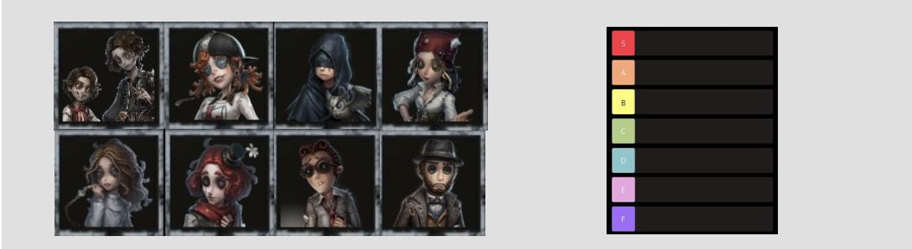
サバイバー全体ランキング
大会競技シーンや使ってて強い、使われてて強いと感じたサバイバーをランキング形式で紹介していきます。
（あくまで個人的なので、もっと良いキャラがいればコメントお願いします。異論求めます。）
🏆 S Tier 解説へ ▼

マイムアーティスト
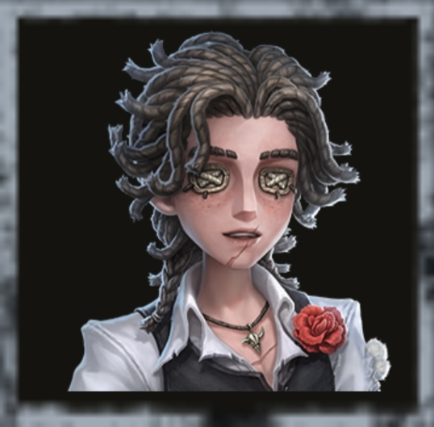
闘牛士
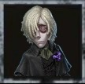
墓守
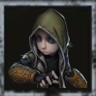
傭兵
オフェンス
一等航海士
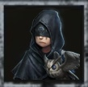
占い師
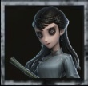
骨董商
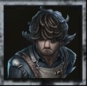
航空エンジニア
人形師
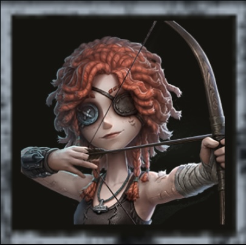
弓使い
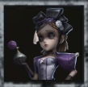
調香師
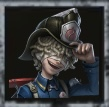
火災調査員
医師

気象学者
空軍
機械技師
呪術師
幸運児

レディファウロ
🌟 A Tier 解説へ ▼
玩具職人
バッツマン
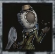
昆虫学者

脱出マスター
心理学者
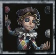
曲芸師
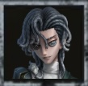
騎士

庭師
小説家
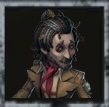
野人
泣きピエロ
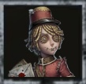
ポストマン
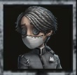
納棺師

祭司

探鉱者
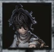
患者

マジシャン

冒険家
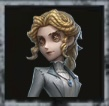
記者
応援団
囚人
⭐ B Tier 解説へ ▼
画家
バーメイド
弁護士
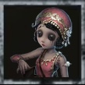
踊り子
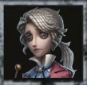
作曲家

教授
💥 C Tier 解説へ ▼

心眼
カウボーイ

泥棒
少女
このランキングの評価基準
本ランキングは、6年以上のプレイ経験と大会（IVL・IJL等）の試合観戦をもとに、第五録が独自に評価したものです。 以下の3つの基準を総合してティアを決めています。
- ① 環境ハンターへの強さ
- 現環境で当たりやすい上位ハンターに対して、チェイス・救助・自衛で「回答」を持っているか。 どれだけ解読が速くても、環境ハンターに何もできず即ダウンするキャラは上位に置いていません。
- ② キャラ調整による強化
- 直近のバランス調整で強化・弱体化されたかどうか。調整直後は実戦評価が定まっていないこともあるため、 実際に使って・使われて感じた体感も加味しています。
- ③ 大会使用率
- プロシーンでのピック率・BAN率は「ガチ環境での信頼度」の指標になります。 ただし大会と野良ランク戦では評価が変わるキャラもいるため、使用率だけで機械的に決めてはいません。
🏆 Sティア解説 ─ 各役割の頂点に立つ3体
第五録では、Sティアのサバイバーを「救助」「サブ救助」「妨害」「解読」の4つの役割で整理しています。 Sティアの共通点は、自分の役割において「試合の流れを一人で変えられる」こと。 現環境はハンターの火力が高く、一度の救助ミスや一度の被弾が即敗北につながるため、 各役割で最も信頼できるキャラが自然と大会のBAN・ピック常連になっています。 ここではその3役割それぞれの筆頭を解説します。
救助枠の筆頭墓守
現環境の最強サバイバーは墓守。 何がやばいって、これだけの性能を持ちながらデメリットが解読速度15%低下のみという破格さです。
救助性能がとにかく高い。指名手配で位置がバレても、地中に潜ることで椅子の耐久時間を稼げます。 地中を進んで椅子前まで寄れるので救助狩りされるリスクがほとんどなく、 中間位置でバレても地中に潜りさえすれば椅子前までたどり着ける可能性が大。 さらに地下潜行中にダメージを受けずに地上へ戻ると、5秒間救助速度が50%上昇する—— 救助そのものにバフをかけられるサバイバーです。
そして現環境ハンターに強く出られるのが最大の評価点。 女王蜂には地中の間エネルギーを吸わせず、ビリヤードプレイヤーには慣性の時間を空費させ、 足萎えの羊には檻を余分に使わせ、フラついたバルーンには地中で被弾して色を消し、 雑貨商の自然取引も無効化できる。 環境上位のハンターほぼ全てに「回答」を持っているのが、 墓守を救助枠どころか全サバイバーの頂点に置いた理由です。
救助枠で迷った候補
・オフェンス ─
救助しながら粘着もできるサバイバー。確定救助や風船粘着など、現環境ハンターにも強く出られるのは最強格。
・一等航海士 ─
時計がとにかく強力で椅子前まであまり狩られず、失楽園で5秒間倒れないため救助狩りも少なく無傷救助が取りやすい。
妨害枠の筆頭弓使い
弓使いは何といってもアイテム数の多さが強み。 風船粘着、ダブルチェイスなど、いろいろな分野で器用に立ち回れる汎用性の高さが持ち味です。
ファーストチェイス者が通り過ぎたときに弓を一本入れてあげるだけでチェイスが伸びるなど、 味方への妨害支援が幅広い。風船粘着のときもアームボウやフライホイールがあるのでダメージを受けにくく、 遠距離武器ゆえにハンター特質「興奮」を使われても無傷で生還できるのも大きな強みです。
そしてアイテム数が多いぶんファーストチェイス自体が伸びやすい。 この「最初の一人が長く粘れる」効果こそ、弓使いが最強格と言われる理由で、妨害枠の筆頭に置きました。
妨害枠で迷った候補
・闘牛士 ─
ムレータで味方を補助でき、自分は追われにくいため危機一髪を持てるのも強み。
・呪術師 ─
最初から怨みの力を所持しているのが強く、現環境ハンターに強く出られる。3スタンでの通電など汎用性も高い。
解読枠の筆頭レディ・ファウロ
私が思う解読職の最強は、まさかのレディ・ファウロ。 解読だけでなくチェイスが強いのが理由です。 透明化は思っている以上に、ハンターからすると追いづらい対象になります。
解読面も優秀で、触った暗号機を10%から始められたり、 誰も触っていない暗号機から解読進度を吸って解読できたりと、3人盤面からでも強いサバイバーです。 さらに機械技師と違って、機械人形の破壊でハンターに存在感を貯めさせてしまうこともない。 チェイスと解読を高水準で両立できる点を評価して、解読枠の筆頭に置きました。
解読枠で迷った候補
・機械技師 ─
即ダウンしてもパペットがいる限り解読が進むので引き分けが固く、上振れたときは3人逃げも狙える。
・幸運児 ─
パペットを出せれば場面に合わせて好きなアイテムを出せる。長い盤面にも強い、安定したサバイバー。
サブ救助枠の筆頭航空エンジニア
もう言うことがないくらい最強に君臨しているのが航空エンジニア。 操作難易度は激ムズですが、使いこなせれば第五人格プレイヤーからモテモテになること間違いなしの、 パーティーに一人は欲しいサバイバーです。
強さの核は滞空の万能さ。救助では滞空での無傷救助、中間位置からでも椅子前に寄れる滞空、 相手のスキルをよける滞空と、あらゆる場面に滞空で「回答」を出せます。 チェイスでも、危なくなったら滞空で距離を取る、滞空ポジションめがけて滞空するなど使い方は無限大。 ジェットも距離を取る面やスキルの駆け引きで無難に強く、ポジション変更にも強い。 触った暗号機の解読速度が2%上がるのも地味ながら効いてきます。
サブ救助枠で迷った候補
・気象学者 ─
ストームグラスの使い方次第で椅子前まで寄れたり、無傷救助や回復までこなせるのが強み。
・火災調査員 ─
エアボールが強力。味方も使えるうえ、ハンターをノックバックさせれば無傷救助も取れる。
・人形師 ─
ルイになって椅子前まで行けば救助できるという、簡単かつ最強の性能。
・調香師 ─
香水で戻って救助すれば恐怖の一撃をもらっても救助できる。中間でバレたときは少しきついのが難点。
🌟 Aティア解説 ─ 「Sとの差」はどこにあるか
Aティアのキャラは弱いわけではありません。単体性能はSに迫るものの、 「特定の役割に依存している」「味方の連携が前提」など、一人で完結しない部分がSとの分かれ目です。 その境界線が分かりやすい2体を取り上げます。
祭司 ─ 支援力はS級、自衛力でA
ロングワープによる救助・移動支援は他キャラで代替できない唯一無二の強みで、 この能力だけ見ればSティアに置いてもおかしくありません。 Sに届かない理由は本人の自衛力の低さです。ハンターに最初に狙われると何もできずに試合が崩れることがあり、 「味方を活かす力はS級、単体の安定感でA」という評価にしています。
ポストマン ─ 効果は強力、発動が受動的
手紙による味方へのバフ配布はどれも強力で、危機的な場面を救う効果は試合を左右します。 Sとの差は「自分から試合を動かせるか」。ポストマンの強みは味方が困った場面で初めて活きる受動的なもので、 Sティア勢のように能動的に流れを変える力ではない、という点でAに置いています。
⭐💥 B・Cティア解説 ─ なぜこの位置なのか
Bティアの共通点：強みはあるが「条件付き」
Bティアに置いたキャラの共通点は、明確な強みを持ちながら役割が局所的、 または同じ役割により安定する上位互換がいることです。 野良のランク戦では真価を発揮しにくい一方、固定パーティでの連携や特定編成では十分採用圏内です。
Bの典型例：バーメイド
バーメイドは「お酒」で味方を回復できる数少ないサバイバーです。 調合した回復酒は治療デバフを受けないため、治療の遅い傭兵やドリル効果の付いた味方にも有効で、 救助・粘着帰りの味方をその場で立て直せるのが最大の持ち味。 加速酒を飲めば一時的に移動速度を大きく上げられ、自分のチェイス補助にもなります。
ただし強みと弱点が表裏一体で、酒を飲む・造るには健康状態である必要があり、 使うたびに自分が負傷する。さらに「ほろ酔い」になるたび解読低下デバフ（重複あり）が付くため、 解読要員としては数えにくい。回復という明確な強みと、自傷・解読低下という代償がはっきりしている、 まさにBティアの典型と言えるキャラです。
ほろ酔いの解読デバフが軽くなるか、回復酒の調合・受け渡しがもう少し手軽になれば一段上がります。 現状でも、味方と合流しやすい固定パーティなら立て直し性能でA相当の働きが可能です。
Cティアの共通点：現環境への回答を持たない
Cティアの共通点は、固有スキルが現在のゲームスピードに追いついていないことです。 環境ハンターの火力・機動力に対して有効打を出せず、キャラ愛がなければ握る理由を見つけにくいのが正直なところです。 ただし、いずれも「コンセプト自体は悪くない」キャラが多く、調整次第で化ける可能性を秘めています。
Cの典型例：カウボーイ
カウボーイは投げ縄で味方を背負って運んだり、遠距離から縄救助したりできる救助特化のサバイバーです。 最大の独自性は、オフェンスと違って興奮や風船殴りで対処されないこと。 極めれば確定で救助を通せるポテンシャルがあり、椅子前で救助狩りを狙うハンターにも遠くから安全に救助を仕掛けられます。
問題は操作難度の高さです。縄は長押しで狙って投げる必要があり、当てる技術がないと真価を発揮できない。 さらに本人のチェイス力は縄頼みで、ハンターの攻撃速度が上がった現環境では立ち回りがシビアになりました。 能力そのものより「使い手を選ぶ難しさ」と「環境スピード」に置いていかれている印象です。
縄の操作補助が入るか、現環境のチェイス速度に追従できる調整があれば、 「興奮・風船殴りで止められない救助」という唯一無二の強みが一気に再評価されます。 プレイヤースキルが如実に出るキャラなので、使い込む価値は今でも十分あります。
よくある質問
初心者はどのキャラから使えばいいですか？
まずは医師や機械技師など、操作がシンプルで解読・自衛の基本を学べるキャラがおすすめです。慣れてきたら傭兵やオフェンスで救助の立ち回りを覚えると、どのキャラを使っても通用する基礎が身につきます。
ランキングはどのタイミングで更新されますか？
大型のキャラ調整・新キャラ実装のタイミングで見直しています。調整直後は評価が揺れるため、実戦での体感が固まってから反映する方針です。
ランク帯によって評価は変わりますか？
変わります。本ランキングは大会・上位帯を基準にしているため、低〜中ランク帯ではチャット連携が不要な自己完結型のキャラ（医師・調香師など）の実用性が相対的に上がります。
まとめ・考察
現環境のサバイバーランキングは「救助の確実性」と「ハンターへの直接妨害」を持つキャラが上位を占めています。解読速度だけで評価が決まった時代は終わり、ハンターの火力インフレに対して「回答を持っているかどうか」がティアの分かれ目です。
とはいえランキングはあくまで目安です。Aティア以下でも使い込んだキャラのほうが勝てることは普通にあるので、自分のプレイスタイルに合ったキャラを見つける参考にしてください。ランキングへの異論・意見はぜひコメント欄へ！
2026/06/11 ─ Sティアを役割別構成に刷新、各ティアの選定理由・FAQを追加
2025/09/10 ─ ランキング更新
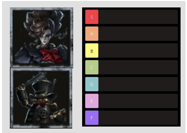
ハンターランキングはこちら
大会競技シーンや使ってて強い、使われてて強いと感じたハンターをランキング形式で紹介していきます。
（あくまで個人的なので、もっと良いキャラがいればコメントお願いします。異論求めます。）
大会競技シーンや使ってて強いと感じたハンターを紹介します。
第五人格の最強サバイバーランキングを紹介しました。
ランキングへの不満、意見などがあれば、ぜひコメントしてください！！
できるだけ皆様が不快の思いのないコメント機能をご協力をお願いします。
みんなのコメント